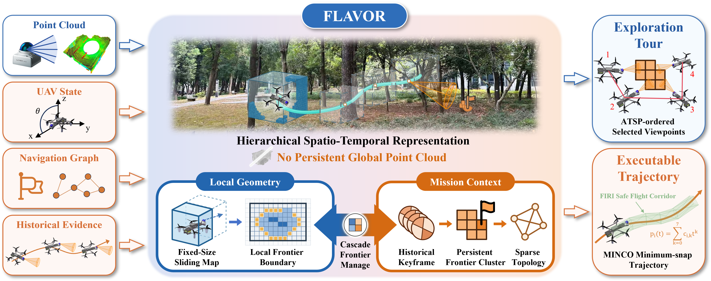
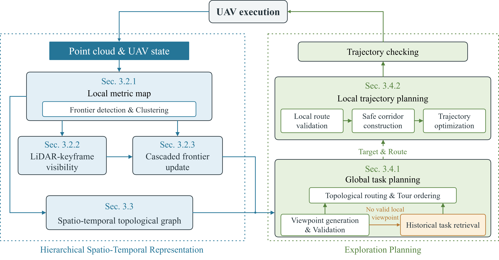

Bounded local geometry
A fixed-size robot-centric map supports occupancy queries, frontier validation, collision checking, and trajectory generation.
FLAVOR Autonomous UAV Exploration
1 State Key Laboratory of Information Engineering in Surveying, Mapping and Remote Sensing,
Wuhan University, Wuhan 430079, China
2 School of Electrical and Electronic Engineering, Nanyang Technological University, 639798, Singapore
3 Electronic Information School, Wuhan University, Wuhan 430072, China
* Corresponding author
Explore beyond the local map.
Bounded local geometry. Persistent mission context.
Project Overview

Research overview
Autonomous UAV exploration supports large-scale surveying and inspection under strict onboard memory and computation constraints. Retaining globally queryable geometry makes memory and query costs grow with the mapped workspace. A robot-centric local map bounds this geometric state, but its finite window discards the observation and task context needed for environment-wide exploration.
We present FLAVOR, a hierarchical spatio-temporal framework that confines dense metric geometry to a local map while retaining compact visibility evidence, unfinished frontier tasks, odometry anchors, and topological routes. A cascaded frontier mechanism preserves unresolved objectives as the map moves. When the UAV returns to a task region, current observations reconstruct its frontier and viewpoint, and the recovered route is checked and repaired before trajectory generation.
Experiments in large-scale simulated environments and two real-world deployments demonstrate efficient exploration beyond the local-map extent with substantially reduced map-representation memory. Dense-map capacity remains independent of explored range; exploration-dependent growth is confined to compact observation, task, and route context.
The FLAVOR framework
Retained mission context guides where exploration resumes. Current local geometry determines how each task is executed.
A fixed-size robot-centric map supports occupancy queries, frontier validation, collision checking, and trajectory generation.
LiDAR-keyframe visibility and cascaded frontier updates preserve observation evidence and unfinished objectives across map shifts.
Sparse topological routes guide the UAV back to pending tasks, which are reconstructed and validated using current observations.

In simulation
Evaluation in large-scale point-cloud environments with MARSIM as the closed-loop LiDAR and vehicle-simulation backend. All planners use a maximum planning speed of 4.0 m/s.
224 × 330 × 41 m
Interconnected tunnels, narrow passages, and vertical drops in the DARPA SubT Cave World scene.
108 × 88 × 5 m
A vegetation-rich forest reconstructed from terrestrial laser scans collected in Guangxi, China.
313 × 62 × 25 m
A long, confined passage with irregular geometry in a lava-tube scene in Hainan, China.
Across the three benchmark scenes, FLAVOR completes exploration with 31.98–41.88% less time and 94–99% less map-representation memory than EPIC.
| Scene | Completion time | Time reduction | Map memory | Memory reduction |
|---|---|---|---|---|
| Cave | 845.20 s | 31.98% | 41.93 MB | 97.22% |
| Forest | 276.87 s | 41.88% | 13.48 MB | 99.00% |
| Lava Tube | 152.30 s | 41.26% | 14.56 MB | 94.00% |
Onboard autonomy
The complete exploration pipeline runs onboard an Intel N305 computer with a Livox MID360 LiDAR. Both deployments extend beyond the local-map width, with a maximum flight speed of 1.2 m/s.
60 × 27 × 3 m exploration region
Autonomous exploration through unstructured vegetation, using retained visibility evidence and frontier tasks to maintain exploration continuity.
50 × 27 × 3.5 m exploration region
Exploration amid structural clutter and transient dust returns, with occupancy and collision queries confined to the sliding local map.
We thank the developers of MARSIM for the UAV simulation platform, ROG-Map for its efficient robot-centric map representation, and EPIC for making their exploration framework openly available. We gratefully acknowledge their contributions to the open-source robotics community.
@misc{zhang2026memorylimitshierarchicalspatiotemporal,
title={Beyond Memory Limits: A Hierarchical Spatio-Temporal Map Representation for Large-Scale 3D Autonomous Exploration},
author={Yizhe Zhang and Jianping Li and Yilun Gao and Liangliang Yin and Pengfei Wan and Bisheng Yang},
year={2026},
eprint={2611.11489},
archivePrefix={arXiv},
primaryClass={cs.RO},
url={https://arxiv.org/abs/2611.11489}
}